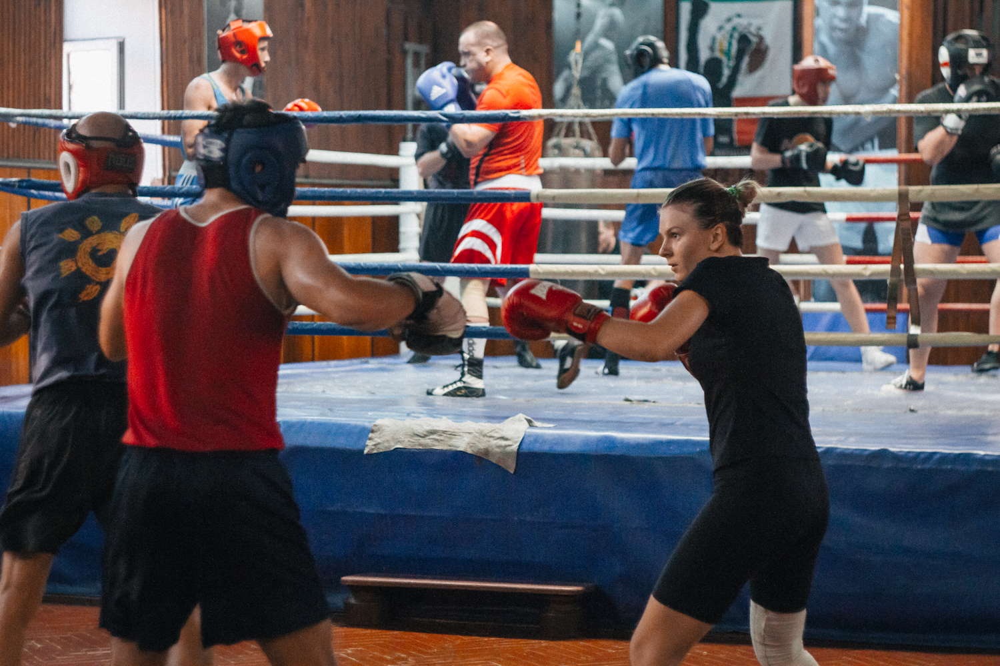

Контактный вид спорта, единоборство, в котором спортсмены наносят друг другу удары кулаками обычно в специальных перчатках. Рефери контролирует бой, который длится до 12 раундов. Победа присваивается тому из противников, который набрал в итоге большее число очков, либо победителем объявляют того боксера, которому удалось сбить соперника с ног, после чего последний не смог подняться в течение десяти секунд (нокаут); травма, не позволяющая продолжать бой, может стать причиной т. н. технического нокаута. Если после установленного количества раундов поединок не был прекращён, то победитель определяется оценками судей.
Раньше главной причиной проведения боёв были деньги — участники сражались за призы, а зрители делали ставки. Современное Олимпийское движение возродило интерес к любительскому боксу, который в 1904 году снова стал Олимпийским видом спорта, а в 1920 году окончательно вошёл в программу Игр. Сейчас любительские бои ограничены тремя или четырьмя раундами, а победитель определяется по количеству очков, набранных за точное попадание в корпус и лицо соперника. Боксёры проводят бой в защитном шлеме, снижающем возможность получить травму, нокдаун или нокаут. Почти во всём мире профессиональный бокс завоевал больше популярности, но на Кубе и в некоторых бывших советских республиках преобладает любительский вариант. Для большинства боксёров выступление на Олимпийских играх становится источником опыта,необходимого для будущей карьеры в профессиональном виде.